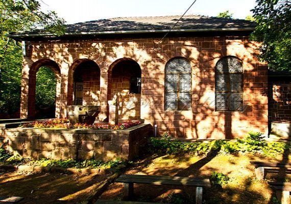
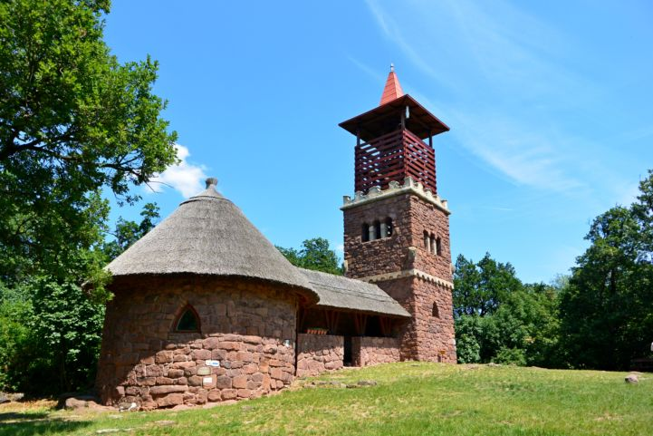
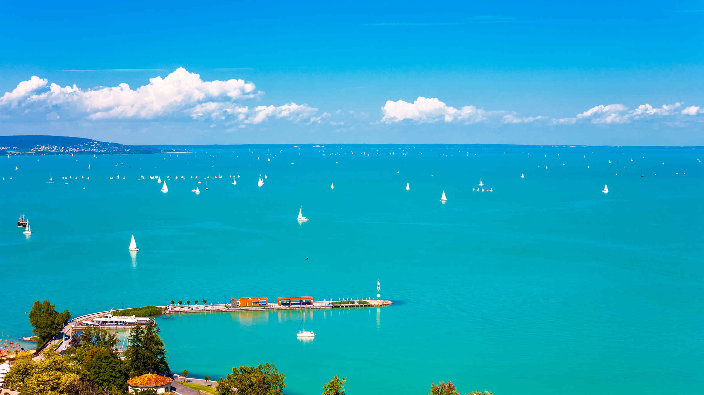
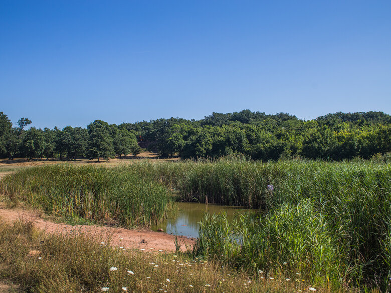

| Balatonfured | Siófok | Keszthely | Badacsonytomaj | Balatonalmádi | Tihany | Káptalanfured |
|---|
Káptalanfüred Balatonalmádi városrésze. Létrejöttét a balatoni turizmus és fürdőkultúra fejlődésének, nevét pedig a veszprémi káptalannak köszönheti. A káptalan Alsóörs területéhez tartozó, Balatonalmádival szomszédos erdőbirtokait az 1930-as években nyaralótelep kialakítása céljából parcellázták. A terület 1946-ig Zala vármegyéhez tartozott.
A városrész fái tölgyek, fenyők, cserjék alatt sok száz nyaralóház, üdülő húzódik meg.
A Dunántúl közepén a Balaton keleti medencéjének északi partján fekszik. Veszprémtől, a megyeszékhelytől 14 km-re található. A város nyugati közigazgatási határán van, a szomszéd Alsóörs településtől 2 km távolságban. A településen áthalad a 71. számú főközlekedési útvonal, amelyből itt ágazik el a Római út és a Balaton északi vasútvonala. Veszprémből pedig aszfaltozott mellékútvonalon juthatunk el ide.
Éghajlatára a kontinentális mellett az óceáni és a mediterrán hatások is befolyással bírnak. A kedvező időjárási viszonyok kialakulásában közrejátszik a Balaton, amely sekély vízmélysége miatt kevés hőt tud elraktározni, de hatása néhány száz méterre -főleg ősszel és tavasszal – érvényesül. (A fentebb leírtak a legtöbb balatoni településre jellemzőek.) Enyhíti a hűvös estéket és a reggeleket. Uralkodó az északnyugati szél. Éves csapadékátlaga 600 mm körüli. A városrész környékén a barna erdőtalajok a legelterjedtebbek.
Angyalos Boldogasszony szabadtéri kápolna (Iskola u. 22.)
Cserehegyi Kilátó
 Köcsi-tó tanösvény
A kornyék túristatérképe itt tekintheto meg.
Térkép